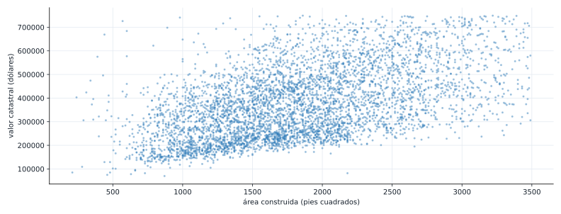
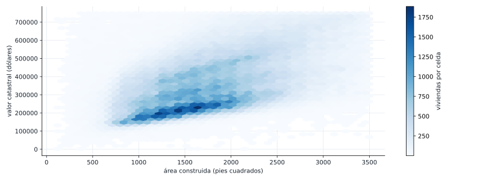
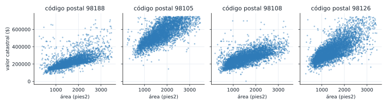
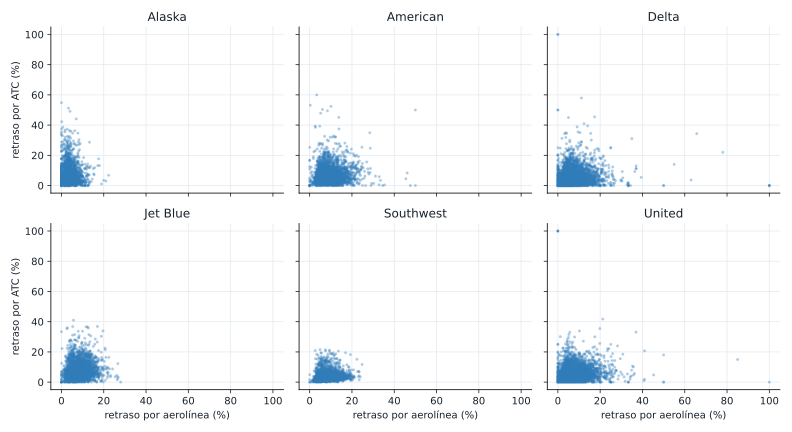
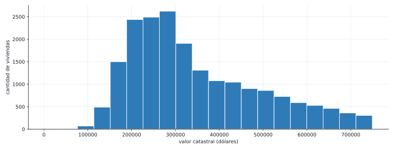
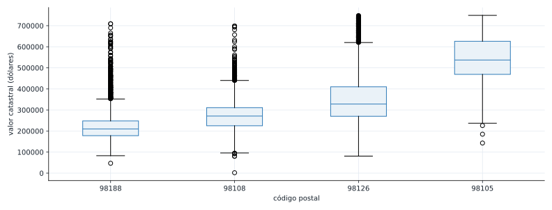

Semana 5. Gráficos de dispersión y condicionales. Cierre de la Unidad 1
| Módulo | Estadística para Analítica |
| Programa | Especialización en Big Data |
| Unidad | Unidad 1. Análisis descriptivo y exploratorio de datos |
Abrir la presentación de la sesión
1 De qué va esta semana
Cerramos el capítulo 1 de Estadística práctica para ciencia de datos con R y Python (Bruce, Bruce y Gedeck, 2.ª edición), la misma fuente de las dos semanas anteriores. Hasta ahora resumiste una variable a la vez: un histograma, un boxplot, un gráfico de barras. Esta semana respondes una pregunta distinta: ¿dos variables numéricas se mueven juntas, y esa relación cambia según una tercera variable?
El dataset guía es kc_tax.csv.gz, del repositorio del libro: casi 500 000 viviendas del condado de King (Seattle, EE. UU.), con su valor catastral, su área construida y su código postal. Ya lo conocías como dataset de respaldo del ejercicio final de las Semanas 03 y 04; esta semana pasa a ser el dataset principal. Vas a ver un problema práctico que no te había tocado todavía: con cientos de miles de puntos, un gráfico de dispersión común se vuelve ilegible, y necesitas otra herramienta para leerlo. Después, reutilizas airline_stats.csv (ya conocido de la Semana 04) para un ejercicio con un resultado bien distinto: ni la relación general ni la relación por grupo son fuertes.
Esta semana cierra la Unidad 1 y trae un entregable: un informe exploratorio (10% de la nota, dentro del 30% del cierre de unidad). El detalle del entregable lo recibes aparte del docente; esta guía te enseña las herramientas y, al final, un ejemplo completo de cómo se arma un informe así.
Al terminar deberías poder:
- Calcular la correlación entre dos variables numéricas con
.corr()e interpretar su signo y su magnitud. - Reconocer el sobregraficado en un gráfico de dispersión con muchos puntos, y resolverlo con un gráfico hexagonal (hexbin).
- Construir un gráfico condicional (el mismo gráfico repetido por cada categoría de una tercera variable) y decidir si la relación entre las dos variables numéricas cambia según la categoría.
- Explicar por qué una correlación, alta o baja, nunca prueba una relación de causa y efecto por sí sola.
- Reunir en un solo informe las herramientas de toda la Unidad 1: tabla de frecuencias, histograma, medidas de localización y dispersión, boxplot, gráfico de barras, tabla de contingencia y, ahora, dispersión y gráficos condicionales.
2 Recapitulación breve: la correlación con datos que ya conoces
Antes de un dataset nuevo, calculemos la correlación entre las dos columnas numéricas de state.csv, ya cargado en las dos semanas anteriores.
import pandas as pd
url = "https://raw.githubusercontent.com/gedeck/practical-statistics-for-data-scientists/master/data/state.csv"
state = pd.read_csv(url)
correlacion = state["Population"].corr(state["Murder.Rate"])
print("correlacion Population vs Murder.Rate:", round(correlacion, 3))correlacion Population vs Murder.Rate: 0.1823 El coeficiente de correlación
El coeficiente de correlación de Pearson mide qué tan fuerte es la relación lineal entre dos variables numéricas, en una escala de -1 a 1:
\[ r = \frac{\sum_{i=1}^{n} (x_i - \bar{x})(y_i - \bar{y})} {\sqrt{\sum_{i=1}^{n} (x_i - \bar{x})^2} \sqrt{\sum_{i=1}^{n} (y_i - \bar{y})^2}} \]
Un valor cercano a 1 dice que, cuando una variable sube, la otra tiende a subir también, de forma casi proporcional. Cercano a -1 dice lo contrario: cuando una sube, la otra tiende a bajar. Cercano a 0 dice que no hay una relación lineal clara entre las dos.
0.182 es una correlación débil: saber cuánta población tiene un estado casi no te dice nada sobre su tasa de homicidios. No es cero (hay una tendencia leve a que estados más poblados tengan una tasa un poco más alta), pero está lejos de una relación fuerte. Vas a ver en un momento un ejemplo con una correlación mucho más marcada.
4 El gráfico de dispersión
Un gráfico de dispersión pone una variable en cada eje y dibuja un punto por observación. Es la herramienta que responde visualmente la misma pregunta que el coeficiente de correlación responde con un número.
url_kc = "https://raw.githubusercontent.com/gedeck/practical-statistics-for-data-scientists/master/data/kc_tax.csv.gz"
kc_tax = pd.read_csv(url_kc, compression="gzip")
print(kc_tax.shape)
print(kc_tax.head())(498249, 3)
TaxAssessedValue SqFtTotLiving ZipCode
0 NaN 1730 98117.0
1 206000.0 1870 98002.0
2 303000.0 1530 98166.0
3 361000.0 2000 98108.0
4 459000.0 3150 98108.0Antes de graficar, filtramos: descartamos filas sin valor catastral, y nos quedamos con viviendas de menos de 750 000 dólares y entre 100 y 3500 pies cuadrados, para dejar fuera errores de captura y propiedades atípicas que estirarían los ejes sin aportar nada a la lectura.
kc_tax0 = kc_tax.loc[
(kc_tax.TaxAssessedValue < 750000) & (kc_tax.SqFtTotLiving > 100) & (kc_tax.SqFtTotLiving < 3500),
:,
].dropna()
print("filas tras filtrar:", len(kc_tax0))
correlacion_kc = kc_tax0["TaxAssessedValue"].corr(kc_tax0["SqFtTotLiving"])
print("correlacion TaxAssessedValue vs SqFtTotLiving:", round(correlacion_kc, 3))filas tras filtrar: 409456
correlacion TaxAssessedValue vs SqFtTotLiving: 0.5360.536 ya es una correlación moderada: a más área construida, tiende a haber un valor catastral más alto, aunque la relación está lejos de ser perfecta (hay casas grandes baratas y casas chicas caras). Grafiquemos una muestra de 5000 viviendas para verla:
import matplotlib.pyplot as plt
muestra = kc_tax0.sample(n=5000, random_state=1)
fig, ax = plt.subplots(figsize=(11, 4.2))
ax.scatter(muestra["SqFtTotLiving"], muestra["TaxAssessedValue"], s=8, alpha=0.5)
ax.set_xlabel("área construida (pies cuadrados)")
ax.set_ylabel("valor catastral (dólares)")
plt.show()
5 El problema del sobregraficado
Con 5000 puntos, el centro del gráfico ya es una mancha densa: no puedes distinguir si ahí hay 50 viviendas superpuestas o 500. El problema empeora si graficas las 409 456 filas completas: la mayoría de los puntos quedan unos encima de otros, y el gráfico deja de decir nada sobre dónde se concentran realmente los datos. A este problema se le llama sobregraficado (overplotting), y aparece cada vez que el número de puntos es grande en relación con el espacio disponible para dibujarlos.
La solución no es graficar menos datos: es cambiar de herramienta. Un gráfico hexagonal (hexbin) divide el plano en celdas de forma hexagonal, cuenta cuántos puntos caen en cada una, y colorea cada celda según ese conteo. En vez de puntos individuales, ves una densidad, exactamente como un histograma en dos dimensiones.
fig, ax = plt.subplots(figsize=(11, 4.2))
hb = ax.hexbin(kc_tax0["SqFtTotLiving"], kc_tax0["TaxAssessedValue"], gridsize=40, cmap="Blues", mincnt=1)
fig.colorbar(hb, ax=ax, label="viviendas por celda")
ax.set_xlabel("área construida (pies cuadrados)")
ax.set_ylabel("valor catastral (dólares)")
plt.show()
El hexbin muestra algo que la nube de puntos escondía: la inmensa mayoría de las 409 456 viviendas caen en una zona concentrada, entre 1000 y 2500 pies cuadrados y entre 200 000 y 500 000 dólares. Los puntos sueltos en los extremos del gráfico de dispersión, que parecían ocupar buena parte del área visual, en realidad son una fracción pequeña del dataset.
6 Gráficos condicionales
Hasta aquí tratamos las 409 456 viviendas como un solo grupo. Pero el dataset trae una tercera variable, ZipCode, que separa las viviendas por zona. Un gráfico condicional repite el mismo gráfico de dispersión una vez por cada valor de esa tercera variable, en paneles uno al lado del otro, para ver si la relación entre las dos variables numéricas se sostiene igual en cada grupo o cambia.
zips = [98188, 98105, 98108, 98126]
sub = kc_tax0.loc[kc_tax0.ZipCode.isin(zips)].copy()
sub["ZipCode"] = sub["ZipCode"].astype(int).astype(str)
resumen_zip = sub.groupby("ZipCode")[["TaxAssessedValue", "SqFtTotLiving"]].median()
print(resumen_zip)
correlacion_por_zip = sub.groupby("ZipCode").apply(
lambda d: d["TaxAssessedValue"].corr(d["SqFtTotLiving"]), include_groups=False
)
print(correlacion_por_zip.round(3)) TaxAssessedValue SqFtTotLiving
ZipCode
98105 537000.0 1690.0
98108 271000.0 1530.0
98126 328000.0 1370.0
98188 210000.0 1560.0
ZipCode
98105 0.702
98108 0.667
98126 0.737
98188 0.648
dtype: float64fig, axes = plt.subplots(1, 4, figsize=(11, 3.0), sharex=True, sharey=True)
for ax, z in zip(axes, [str(z) for z in zips]):
d = sub.loc[sub.ZipCode == z]
ax.scatter(d["SqFtTotLiving"], d["TaxAssessedValue"], s=8, alpha=0.5)
ax.set_title(f"código postal {z}")
ax.set_xlabel("área (pies2)")
axes[0].set_ylabel("valor catastral ($)")
plt.show()
Esta es la parte más importante de la semana: la correlación general, sin condicionar, era 0.536. Condicionada por código postal, sube a un rango de 0.648 a 0.737 en las cuatro zonas. Dentro de cada zona, el área construida predice el valor catastral mucho mejor que en el dataset completo. Tiene sentido: parte de la variación del precio que el gráfico general no explicaba se debía a la zona misma (algunas zonas son más caras por ubicación, no solo por tamaño de la vivienda), y condicionar por zona elimina esa fuente de variación, dejando ver la relación real entre área y precio dentro de un mismo mercado local.
Por qué esto importa más allá de este dataset. Un gráfico condicional no es solo “el mismo gráfico repetido varias veces”: es una herramienta para descubrir si una tercera variable está mezclando grupos que en realidad se comportan distinto. Antes de concluir que dos variables tienen una relación débil (o fuerte) a partir del gráfico general, vale la pena preguntar: ¿hay una tercera variable categórica razonable para condicionar, y cambia la conclusión si la uso?
Con airline_stats.csv (ya conocido de la Semana 04), calcula la correlación entre pct_carrier_delay (retraso atribuible a la aerolínea) y pct_atc_delay (retraso atribuible al control de tráfico aéreo) para las 33 468 filas completas. Después, calcula esa misma correlación condicionada por airline. Antes de correr el código: ¿esperas que condicionar por aerolínea suba la correlación, como pasó con los códigos postales, o que se quede igual de débil en cada grupo?
url_air = "https://raw.githubusercontent.com/gedeck/practical-statistics-for-data-scientists/master/data/airline_stats.csv"
air = pd.read_csv(url_air)
print(air.shape)
print(air["airline"].unique())
correlacion_air = air["pct_carrier_delay"].corr(air["pct_atc_delay"])
print("correlacion general:", round(correlacion_air, 3))
correlacion_por_aerolinea = air.groupby("airline").apply(
lambda d: d["pct_carrier_delay"].corr(d["pct_atc_delay"]), include_groups=False
)
print(correlacion_por_aerolinea.round(3).sort_values())(33468, 4)
['American' 'Alaska' 'Jet Blue' 'Delta' 'United' 'Southwest']
correlacion general: 0.144
airline
Alaska 0.067
American 0.105
United 0.145
Jet Blue 0.153
Delta 0.170
Southwest 0.210
dtype: float64aerolineas = sorted(air["airline"].unique())
fig, axes = plt.subplots(2, 3, figsize=(11, 6.0), sharex=True, sharey=True)
for ax, a in zip(axes.flat, aerolineas):
d = air.loc[air.airline == a]
ax.scatter(d["pct_carrier_delay"], d["pct_atc_delay"], s=8, alpha=0.4)
ax.set_title(a)
for ax in axes[-1, :]:
ax.set_xlabel("retraso por aerolínea (%)")
for ax in axes[:, 0]:
ax.set_ylabel("retraso por ATC (%)")
plt.show()
Al contrario del ejemplo de las viviendas, aquí condicionar por aerolínea no revela una relación más fuerte: la correlación general (0.144) y las seis correlaciones por aerolínea (entre 0.067 y 0.210) son todas débiles. La lección no es que condicionar siempre suba la correlación: es que condicionar te deja verificar si una relación débil sigue siendo débil dentro de cada grupo, o si estaba escondiendo algo. Aquí confirma que sigue siendo débil en las seis aerolíneas por igual.
7 Correlación no es causalidad
Antes de cerrar la unidad, una advertencia que aplica a todo lo que calculaste hoy: un coeficiente de correlación alto, o un gráfico de dispersión con una tendencia clara, nunca prueban por sí solos que una variable causa el cambio en la otra. El área construida y el valor catastral están correlacionados en parte porque construir más área cuesta más, pero ninguna medida de correlación descarta otras explicaciones (una tercera variable, como la zona, que afecta a las dos a la vez; o simple coincidencia en una muestra pequeña). La correlación es evidencia de que dos variables se mueven juntas, no una prueba de por qué.
8 Cierre de la Unidad 1: la caja de herramientas completa

Un informe exploratorio no usa una sola herramienta: combina varias, según la pregunta. Para cerrar, armamos un mini informe sobre las cuatro zonas de kc_tax0 que ya trabajamos, mezclando herramientas de las tres semanas de la unidad.
resumen_cierre = sub.groupby("ZipCode")["TaxAssessedValue"].agg(["count", "median", "std"]).round(0)
print(resumen_cierre) count median std
ZipCode
98105 4481 537000.0 102713.0
98108 5535 271000.0 71323.0
98126 5631 328000.0 112092.0
98188 4043 210000.0 74077.0fig, ax = plt.subplots(figsize=(11, 4.2))
ax.hist(sub["TaxAssessedValue"], bins=20)
ax.set_xlabel("valor catastral (dólares)")
ax.set_ylabel("cantidad de viviendas")
plt.show()
fig, ax = plt.subplots(figsize=(11, 4.2))
orden = sub.groupby("ZipCode")["TaxAssessedValue"].median().sort_values().index
ax.boxplot([sub.loc[sub.ZipCode == z, "TaxAssessedValue"] for z in orden], tick_labels=orden)
ax.set_xlabel("código postal")
ax.set_ylabel("valor catastral (dólares)")
plt.show()
Ejemplo de conclusión ejecutiva, del tipo que se espera en el informe de esta semana: “Las cuatro zonas analizadas tienen valores catastrales muy distintos: la mediana va de 210 000 dólares en el código postal 98188 a 537 000 en el 98105, sin superposición entre las cajas de esas dos zonas. Con 5000 viviendas de muestra, el área construida predice el valor catastral con una correlación de 0.536, pero esa cifra sube a entre 0.648 y 0.737 cuando se calcula dentro de cada zona por separado: buena parte de la variación de precio que parecía”ruido” en el análisis general en realidad se explica por la zona, no por el tamaño de la vivienda.”
9 Ejercicio final: constrúyelo tú, de principio a fin
Igual que en las dos semanas anteriores, este ejercicio no trae solución. A diferencia de las anteriores, esta vez el resultado es justo lo que necesitas para el entregable de la semana.
Paso 1. Retoma tu dataset
Usa el mismo dataset que trabajaste en el ejercicio final de la Semana 03 o 04 (kc_tax.csv.gz o el que hayas elegido), o continúa con uno nuevo si el anterior no tenía al menos dos variables numéricas.
Paso 2. Encuentra una relación entre dos variables numéricas
Calcula la correlación entre dos variables numéricas de tu dataset y grafica la dispersión. Si tienes más de unos pocos miles de puntos, revisa si necesitas un hexbin en vez de un gráfico de puntos.
Paso 3. Condiciona por una tercera variable
Si tu dataset tiene una variable categórica con pocas categorías, repite el gráfico de dispersión condicionado por ella. Compara la correlación general contra la correlación dentro de cada grupo: ¿sube, baja o se queda igual?
Paso 4. Arma tu informe exploratorio
Reúne en un solo documento las herramientas de toda la unidad que apliquen a tu dataset: tabla de frecuencias e histograma, medidas de localización y dispersión, boxplot, gráfico de barras o tabla de contingencia si tienes variables categóricas, y el gráfico de dispersión (condicional si corresponde) de esta semana. Cierra con una conclusión ejecutiva, en el mismo tono del ejemplo de arriba.
Revisa que tu informe cumpla las tres condiciones del módulo: reproducible, trazable y ejecutivo (ver la presentación del módulo). Con esto llegas listo al entregable de cierre de la Unidad 1.
10 Errores frecuentes
Error 1
Confundir correlación con causalidad
Causa. Una correlación alta, o un gráfico de dispersión con una tendencia clara, se siente como prueba suficiente de que una variable causa el cambio en la otra.
Solución. Antes de afirmar causalidad, pregunta si existe una tercera variable que podría explicar las dos a la vez. En el ejemplo de esta guía, la zona (código postal) afecta tanto el tamaño típico de las viviendas como su precio; parte de la correlación entre área y valor catastral podría venir de ahí, no de que el área “cause” el precio de forma directa y aislada.
Error 2
Graficar un dataset grande sin revisar el sobregraficado
Causa. Un gráfico de dispersión se ve razonable con unos cientos de puntos, y es tentador usar el mismo código sin cambios sobre un dataset de cientos de miles de filas.
Solución. Antes de interpretar un gráfico de dispersión, pregúntate cuántos puntos estás dibujando. Si el centro del gráfico se ve como una mancha sólida en vez de puntos distinguibles, cambia a un hexbin o toma una muestra representativa, como se hizo en esta guía.
Error 3
Reportar una correlación general sin revisar si cambia por grupo
Causa. Calcular .corr() sobre el dataset completo y reportar ese único número, sin preguntarse si una variable categórica disponible podría estar mezclando grupos con comportamientos distintos.
Solución. Si tienes una variable categórica razonable, calcula también la correlación condicionada por esa variable, como se hizo con los códigos postales de esta guía. A veces sube (como en las viviendas), a veces se mantiene igual de débil (como en las aerolíneas): las dos son conclusiones válidas, pero solo las conoces si haces la comparación.
11 Lista de chequeo de la semana
Antes de la próxima sesión
12 Lo que viene
- Entregable de esta semana. Informe exploratorio de cierre de la Unidad 1 (10%, dentro del 30% del cierre). El docente entrega el detalle completo aparte.
- Semana 6. Empieza la Unidad 2: variables aleatorias, espacio muestral y función de distribución.
13 Recursos
- Bruce, P., Bruce, A. y Gedeck, P. Estadística práctica para ciencia de datos con R y Python. 2.ª edición, MARCOMBO, 2022. Capítulo 1: “Análisis exploratorio de datos”. Fuente de esta guía.
- Datasets de esta guía, del repositorio de datos del libro:
state.csv,kc_tax.csv.gzyairline_stats.csv - Documentación de
pandas.Series.corr: pandas.pydata.org/docs/reference/api/pandas.Series.corr.html - Documentación de
matplotlib.pyplot.hexbin: matplotlib.org/stable/api/_as_gen/matplotlib.pyplot.hexbin.html
Estadística para Analítica. Institución Universitaria Pascual Bravo. Facultad de Ingeniería. Semestre 2026-02.
Transparencia. La redacción de esta guía contó con el apoyo de inteligencia artificial, usando el modelo Claude Opus 5 de Anthropic. Todo el contenido fue revisado y validado. Las salidas de terminal y los gráficos son reales, producidos al ejecutar estos mismos programas durante la preparación del material.